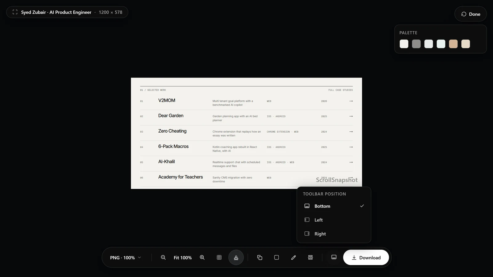

Bottom, left, or right
Every result-page bar, whether the viewer, the editor, crop, or slicing, can stand upright against the left or right side, or stay along the bottom. Zoom is part of each bar rather than a separate pill, and the capture keeps clear of the bar wherever it is.

- Open a finished capture.
- Press the toolbar's position button, near the end of the bar.
- Choose Bottom, Left, or Right. You can also change it in Settings, under Output.
Toolbars that fit the window
When a toolbar is longer than the window is wide, or tall at a side, its middle scrolls: sideways along the bottom, and the mouse wheel works too. It fades at the edge where there is more to see. Download, Apply, Cancel, Undo and Redo stay pinned at the ends, so the main actions are always in reach.
Shorter by design
To keep the bars short, Format and size share one button, shown like PNG · 100%. Copy, Crop, Edit, and Slice are icons with tooltips. In the editor, colour, stroke, and text size are one button each, and each opens its choices.